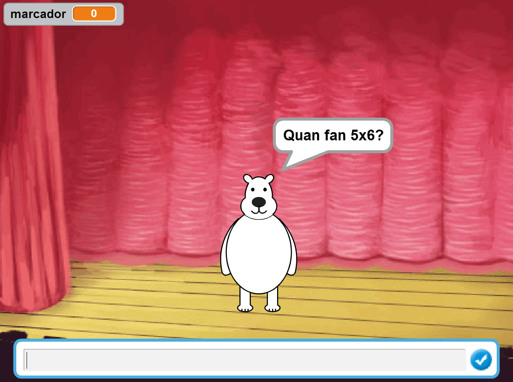
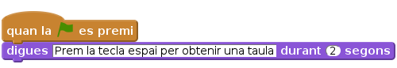
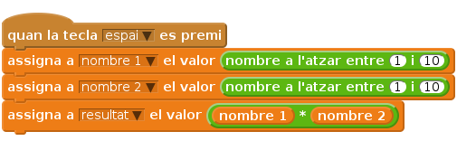
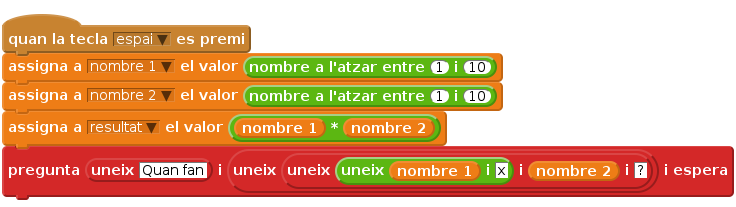
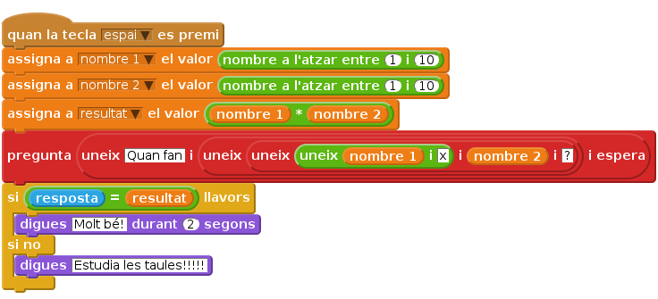
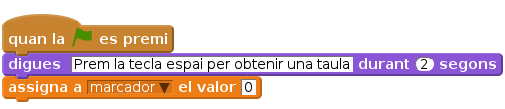

Introducció
En aquest projecte aprendràs a crear un generador de preguntes de taules de multiplicar. El podràs fer servir per repassar-les tu o per comprovar l’encert dels teus germans o amics més petits.

Pas 1: Dissenyar el presentador i l’escenari
Llista de tasques
Triarem un personatge que serà el que preguntarà les taules de multiplicar. També dissenyarem un escenari que ens agradi de fons.
- Comenceu un projecte nou de Scratch. Aneu a la finestra personatges. Elimineu el gat (premeu el botó dret damunt del gat i llavors esborra. Si aquesta instrucció no funciona, premeu majúscules i apreteu el botó esquerra del ratolí).
- Creeu un nou personatge. El podeu agafar de la galeria de personatges o el podeu dibuixar vosaltres mateixos clicant el pinzell. Nosaltres hem triat bear-2 de la galeria.
- Situeu el personatge una mica a l’esquerra de l’escenari.
- Aneu a l’escenari. Trieu un fons que us motivi de la galeria o dibuixeu-lo vosaltres mateixos. Nosaltres hem triat stage-1.
- Cliqueu la pestanya de
Programes. Feu que el personatge digui: ‘Prem la tecla espai per obtenir una taula’.

Proveu el projecte
Cliqueu la bandera verda. Apareix el missatge “Prem la tecla espai per obtenir una taula?”
Deseu el projecte
Pas 2: Crear dos nombres aleatoris i multiplicar-los
Llista d’activitats
- Ara caldrà generar dos nombres a l’atzar i multiplicar-los. Per fer això ens caldrà generar 3 variables. Cliqueu la paleta
Dadesi després al botó Crea una Variable. Anomeneu-lanombre 1i seleccioneu la opció “Per a tots els personatges”, i també desmarqueu la caixeta al costat de la variable perquè no es vegi a l’escenari. Feu el mateix creant dues variables més,nombre 2iresultat. Cada vegada que es premi la tecla espai, hem de donar valors a l’atzar als dos nombres i multiplicar-los. Aquests dos nombres estan compresos entre l’1 i el 10. Posarem el resultat de la multiplicació a la variable
resultat.
Proveu el projecte
Podeu mostrar ara les variables a l’escenari marcant la caixeta al costat de la variable de la paleta Dades. Cliqueu la bandera verda. Apareix el missatge “Prem la tecla espai per obtenir una taula?” Quan premeu la tecla espai, obteniu un resultat de la multiplicació correcte?
Deseu el projecte
Pas 3: Comprovar el resultat
Llista d’activitats
- Ara caldrà preguntar al jugador el resultat de multiplicar els dos nombres. Per fer-ho, farem servir la instrucció
pregunta(a la paleta deSensors). - Fixeu-vos que per preguntar Quan fan 3 x 5? haurem d’unir variables i cadenes de caràcters. El primer nombre està emmagatzemat a la variable
nombre 1i el segon a la variablenombre 2. Per tant, haurem d’unir els caràcters “Quan fan” amb la variablenombre 1, el caràcter de multiplicació “x”, la variablenombre 2i el símbol d’interrogació “?”. Això ho farem així:

El jugador escriurà la resposta per pantalla i nosaltres haurem de comprovar que la resposta és correcta. Això ho farem de la manera següent:

Proveu el projecte
Premeu bandera verda i la tecla espai. Proveu d’introduir diferents resultats de la multiplicació (certs i falsos) i comproveu que a cada vegada s’obté el missage desitjat.
Deseu el projecte
Pas 4: Afegim un marcador
Llista d’activitats
- Anem a afegir un marcador que ens digui el nombre de taules encertades i fallades. Creeu una variable per a tots els personatges anomenada
marcador. Reinicieu la variable
marcadora zero al començar la partida. Afegiu el següent al bloc inicial:
Ara només falta augmentar un punt al marcador per a cada resposta encertada i restar-ne un per a cada resposta fallada:
![quan la tecla [espai v] es premi
assigna a [nombre 1 v] el valor <nombre a l'atzar entre (1) i (10)>
assigna a [nombre 2 v] el valor <nombre a l'atzar entre (1) i (10)>
assigna a [resultat v] el valor <(nombre 1) * (nombre 2)>
pregunta (uneix [Quan fan] i (uneix(uneix(uneix(nombre 1) i [x]) i (nombre 2) i [?])) i espera
si < (resposta) = (resultat)> llavors
digues [Molt bé!] durant (2) segons
augmenta [marcador v] en [1]
si no
digues [Estudia les taules!!!!!]
augmenta [marcador v] en [-1]](df69130f699dcf305811153667a6de0611eceee1.png)
Proveu el projecte
Premeu bandera verda i la tecla espai. Marqueu la caixeta al costat de la variable marcador perquè es vegi a l’escenari. Al iniciar la partida, la variable està a zero? Aconseguiu sumar un punt per a cada resposta encertada i restar-ne un per a cada errada?
Deseu el projecte
Repte 1: Afegir pantalla d’inici i final
En qualsevol joc, sempre hi ha una caràtula d’inici amb el nom del joc i una pantalla tipus Game over que ens indica que hem acabat. Intenta crear-les a l’escenari.
Per tant, ara tindràs 3 fons a l’escenari: el fons inici, el fons jugant i el fons game over. Com ho faràs per saber quin fons s’ha de posar en cada moment del joc?
Repte 2: Afegir efectes gràfics per ressaltar l’encert/error de les respostes
En qualsevol joc avançat, quan un jugador encerta o erra una resposta hi ha efectes gràfics que ho ressalten. Com ho faries en el teu cas? L’efecte només hauria de durar una poca estona i l’escenari i/o personatge haurien de tornar a la situació normal per a tornar a preguntar una taula.
Repte 3: Afegir un compte enrere en el temps
Per fer el joc més divertit, podeu afegir un compte enrere en el temps. Aneu a l’escenari i creeu una variable temps i reinicieu-la a 60 segons a l’inici de la partida. Com ho fareu per què a cada segon que passi la variable temps disminueixi en una unitat?
També caldrà que quan la variable temps es faci zero el joc es pari completament i s’informi al jugador de la puntuació obtinguda.
Per fer el joc encara més divertit, fes que el personatge pregunti les taules al cap d’un temps de la resposta del jugador i que no s’hagi de prémer cada vegada la tecla espai per obtenir-ne una de nova.